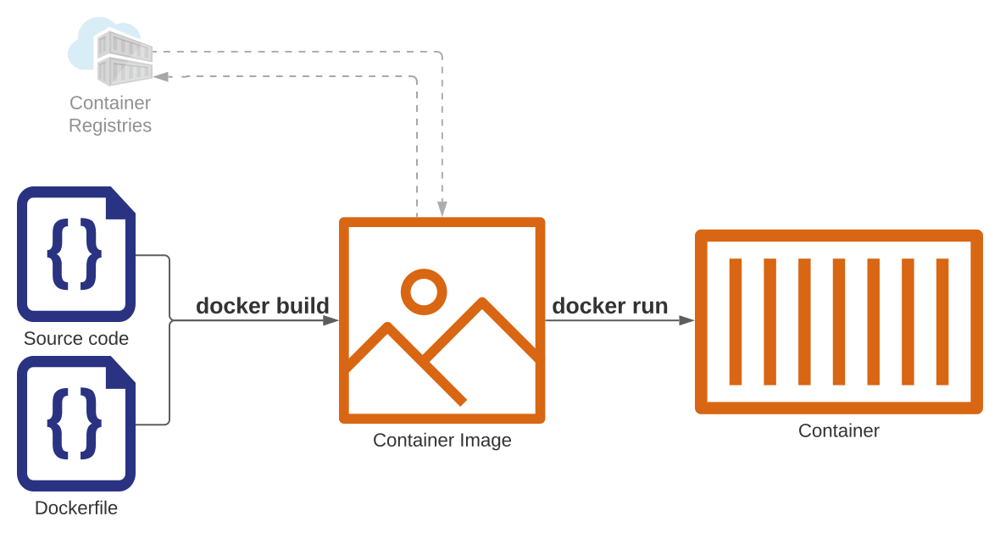

## Docker 🐋 ### What is it and how to use it By Christian Fosli
Docker is a tool that lets us *package* and *run* an application in an isolated environment ("container").
### Why? * Consistent * Scalable * Convenient (run tools locally without installing them) <img src="images/works_on_my_machine.png" alt="works on my machine" />
### Containers vs Virtual Machines <img src="images/vm_vs_container.png" alt="vm vs container" /> <small>Image from "Docker and Kubernetes: The Big Picture" pluralsight course. ©Pluralsight LLC</small>

### The Dockerfile
```docker FROM <base-image> WORKDIR /app COPY . . RUN <build-command> ENTRYPOINT ["myapp"] ```
#### Leverage build cache for faster builds ```docker [|3-4|5-7] FROM node:lts WORKDIR /usr/src/app COPY package.json package-lock.json ./ RUN npm install COPY . . EXPOSE 80 CMD ["node", "server.js"] ```
#### Multi-stage builds keep images small ```docker [1-6|1,8,10|8-11] FROM mcr.microsoft.com/dotnet/sdk:5.0 AS build WORKDIR /src COPY *.csproj . RUN dotnet restore COPY . . RUN dotnet publish -c Release -o /app/publish FROM mcr.microsoft.com/dotnet/aspnet:5.0 WORKDIR /app COPY --from=build /app/publish . ENTRYPOINT ["dotnet", "MyApp.dll"] ```
#### Building container images ```console docker build [OPTIONS] PATH ``` ##### Example ```console docker build -t myapp:latest . ```
### Running containers ```console docker run [OPTIONS] IMAGE[:TAG] [COMMAND] [ARGS] ```
#### Run interactive process in the foreground ```console [2] docker run --rm \ -it \ alpine ```
#### Mount files into container with bind-mount volumes ```console [2] docker run --rm \ -v "$(pwd):/work" \ prettier myfile.js ```
#### Run in the background (detached) ```console [2] docker run --rm \ -d \ -p 80:80 \ christianfosli/intro-to-docker-slides ```
#### Publish port(s) ```console [3|] docker run --rm \ -d \ -p 80:80 \ christianfosli/intro-to-docker-slides ```
#### Environment variables ```console [2] docker run -d -p 5432:5432 \ -e POSTGRES_PASSWORD=myPass \ postgres ```
#### Environment variables ```console [2-4] docker run -d -p 9200:9200 -p 9300:9300 \ -e 'discovery.type=single-node' \ -e 'ES_JAVA_OPTS=-Xms512m -Xmx512m' \ -e 'ELASTIC_PASSWORD=somePassword' \ elasticsearch ```
#### Networks ```console [1|1,4,10|5,9] docker network create myapp docker run --rm -d -p 80:80 \ --network myapp \ -e DB_CONN=postgresql://postgres:myPass@db:5432 myapp docker run --rm -d -p 5432:5432 \ --name db --network myapp \ -e POSTGRES_PASSWORD=myPass \ postgres ```
* `docker build` * `docker images` * `docker run` * `docker ps` * `docker logs`
### Docker-Compose
#### Without docker-compose: ```console docker build -t myapp . docker network create myapp docker run --rm -d -p 1433:1433 \ --network myapp \ -e "ACCEPT_EULA=Y" \ -e "SA_PASSWORD=strongpassw0rd!" \ --name db \ mcr.microsoft.com/mssql/server:2019-latest docker run --rm -d -p 80:80 \ --network myapp \ -e "DB_CONN=Server=db:1433;Database=..." \ -e "TZ=Europe/Oslo" \ myapp ```
#### With docker-compose: ```console docker-compose up -d --build ```
#### How? ```yaml version: 3 services: myapp: build: . ports: - "80:80" env: DB_CONN: Server=db:1433;Database=... TZ: Europe/Oslo db: image: mcr.microsoft.com/mssql/server:2019-latest env: ACCEPT_EULA: Y SA_PASSWORD=strongpassw0rd! ports: - "1433:1433" ```
### Questions?
### Next steps * start using docker instead of installing things like database engines * docker's getting started tutorial ```console docker run -d -p 80:80 docker/getting-started ``` * Nigel Poulton's pluralsight courses ----- <small> Slides: <a href="https://hub.docker.com/r/christianfosli/intro-to-docker-slides">hub.docker.com/r/christianfosli/intro-to-docker-slides</a><br/> Source: <a href="https://github.com/christianfosli/intro-to-docker-slides">github.com/christianfosli/intro-to-docker-slides</a> </small>